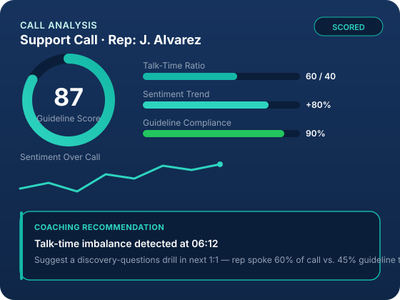
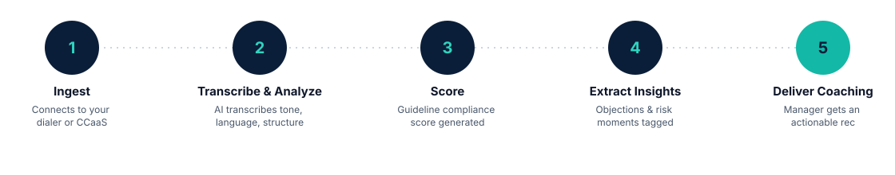

Full-Funnel Call Analytics
Every call is transcribed and analyzed for talk-time ratio, sentiment trend, silence gaps, and pacing — so you see patterns manual spot-checks always miss.
Conversation Intelligence for Revenue & Support Teams
Call Lens analyzes 100% of your sales and support calls, scores them against your guidelines, and hands your managers coaching recommendations — automatically.
Built for operations, sales, and support leaders who coach at scale.

What Call Lens Does
From raw audio to coaching-ready insight — automatically, consistently, at scale.
Every call is transcribed and analyzed for talk-time ratio, sentiment trend, silence gaps, and pacing — so you see patterns manual spot-checks always miss.
Call Lens surfaces objections, competitor mentions, risk signals, and commitments the moment they happen — no more digging through call recordings.
Score every call against your own playbook and compliance checklist — not a generic template — so scores reflect what actually matters to your org.
Each scored call generates a specific, evidence-backed coaching recommendation your managers can act on in minutes, not hours.
Track guideline compliance and coaching impact over time, by rep, team, or guideline — so you can prove what coaching is working.
Get flagged immediately when a call shows a sentiment dip, missed disclosure, or escalation risk — before it becomes a bigger problem.
How It Works

Call Lens connects to your dialer, contact center, or conferencing tool and ingests every recorded call automatically.
AI transcribes each call and analyzes language, tone, and structure against your defined guidelines.
Every call receives a guideline compliance score plus flagged metrics (talk ratio, sentiment, key moments).
Objections, risks, and coaching-relevant moments are tagged and surfaced automatically.
Managers receive a ready-to-use coaching recommendation, linked to the exact moment in the call.
For Operations Managers
Operations managers don't have time to listen to every call — but they're still accountable for every outcome. Call Lens turns that gap into an advantage: every call is scored against your guidelines automatically, and every score comes with the exact transcript moment behind it. Instead of generic feedback, managers open 1:1s with specific, evidence-backed coaching recommendations — turning call review from a bottleneck into a five-minute prep step.
Call Lens flags that a rep skipped the pricing-objection framework on 3 calls this week, with the exact transcript excerpt and a suggested talking-point refresher.
A support call shows customer sentiment dropping sharply mid-call. Call Lens timestamps the moment and recommends a de-escalation coaching point for the next 1:1.
A rep is talking 80% of the call. Call Lens flags the imbalance against your guideline benchmark and recommends a discovery-questions coaching drill.
Request a Demo
Book a 20-minute walkthrough — we'll show guideline scoring and coaching recommendations using a sample call from your industry.
We only use your info to schedule your demo. No spam, ever.